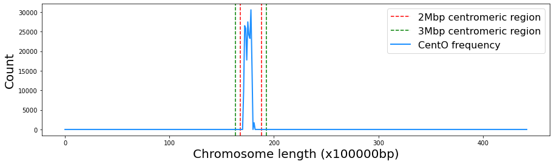

Welcome to CentOFinder’s documentation!¶
Written by Camila Riccio, Mauricio Peñuela, Camilo Rocha and Jorge Finke
Last update: 04/04/22
CentOFinder¶
This is a Python3 implementation to predict the centromere of rice chromosomes using CentO sequences. The CentOFinder module takes as input a fasta file with a rice chromosome sequence, divide the chromosome into windows of the length indicated by the user (Kbp windows are usually used), aligns the CentO sequence in the chromosome using the BLAST algorithm, and detects de window with highest frecuency of CentO alignments. As in rice the centromere is usually a region between 2 and 3 Mbp, the module predicts a centromeric region for each of these longitudes based on the midpoint of the window with the highest frequency of CentO alignments.
Setup¶
Clone the repository:
git clone git@github.com:criccio35/CentOFinder.git
Requirements¶
Install the requirements by entering the following commands in the terminal:
Install biopython module:
pip install biopython
Install Basic Local Alignment Search Tool (BLAST):
sudo apt update
sudo apt install ncbi-blast+
Example¶
The file test.py contains an example that illustrates how to use the code to detect the centromere location in chromosome 01 of the Oryza sativa Indica Group cultivar:IR64. Other IR64 chromosome sequences are available in the NCBI Genome database under the accession number RWKJ00000000.
Below is a more detailed explanation of the same example:
Import module:
import CentOFinder as cf
Input CentO fasta file path:
CentO_path = 'input_data/CentO_AA.fasta'
Input chromosome fasta file path:
chromosome_path = 'input_data/Osat_IR64_AGI_NSD_chrOK.id_chr01.fasta'
Input window size:
size_w = 100_000
Instantiate the CentOFinder class:
centromere = cf.CentOFinder(CentO_path, chromosome_path, size_w)
Call the method to detect the centromere:
centromere.detect_centromere()
The above prints the following:
Chromosome length: 44350042 base pairs
Window size: 100000
Total chromosome whindows: 443
----------------------------------------
Approximate location of centromere:
Window number: 178
Window midpoint (base pair): 17850000
2Mbp centromeric region prediction: [15850000,19850000]
3Mbp centromeric region prediction: [14850000,20850000]
Plot the results
{kind=link}
CentOFinder package¶
CentOFinder module¶
Created on Fri Mar 18 12:54:34 2022
@author: camila Riccio and Mauricio Peñuela
- class CentOFinder.CentOFinder(CentO_path, chromosome_path, size_w, wbp=None, total_windows=None, chromosome_length=None, CentO_freq=None, c_window_number=None, c_window_interval=None)¶
Bases:
objectA class used to detect the location of the centromere on rice chromosomes, based on the frequency of CentO sequences.
- detect_centromere(verbose=True)¶
Computes the frequency of CentO alignments per window, the window number with the highest frequency, and the corresponding 2Mbp and 3Mbp centromeric region prediction.
- Parameters
verbose (bool) – If True print information about the results, i.e., chromosome length, window size, Total chromosome windows, window with highest CentO frequency, window midpoint and centromeric region prediction of 2Mbp and 3Mbp. Default to True.
- plot_CentO_frequency(color='dodgerblue', label='CentO frequency')¶
Plot the frequency of base pairs belonging to a CentO alignment for each window of the chromosome. Also displays the predicted centromeric region of 2Mbp and 3Mbp.
- Parameters
color (string) – color of the line that represents the frequency of alignments
label (string) – label for the frequency line of the alignments